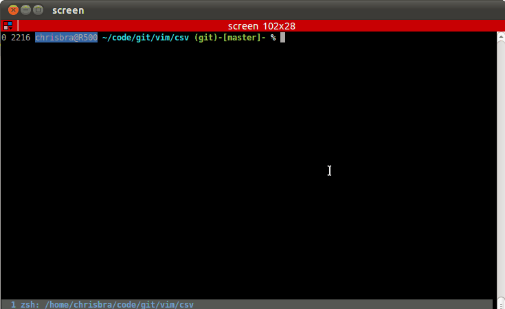

http://www.vim.org/scripts/script.php?script_id=2830
Open csv.vmb in Vim and source the file: :so %
This will install the plugin into your $HOME/.vim/ftplugin directory and the
documentation into your $HOME/.vim/doc directory.
See also the help for installing Vimball-Archives (:h vimball-intro)
Take a look at :h ft-csv.txt for the documenation and read
:h csv-installation to have vim automatically detect csv-files.

This little filetype plugin allows among others:
:SearchInColumn command
:HiColumn command
:ArrangeColumn command
:DeleteColumn command
:Header or :VHeader command
:Sort command
:Column command
:MoveCol command
:SumCol (you can also define your own)
W forwards,
H backwards,
K upwards,
J downwards
:Analyze command
:NewRecord command
:CSVFixed
:VertFold
:Table to create ascii type tables available as plugin for all filetypes)
enter on a value and all other lines, that don't have this value in this column will be folded away.
enter on another value and this value will be ANDed to the filter list.
Backspace to delete the last item from the filter list.
Space to fold all lines, that have the same value in the current field,
Enter to fold all lines, that have a different value in the current field.
:Filters to see what filters are actvie
Please read the help on how to use the plugin :h ft-csv.txt